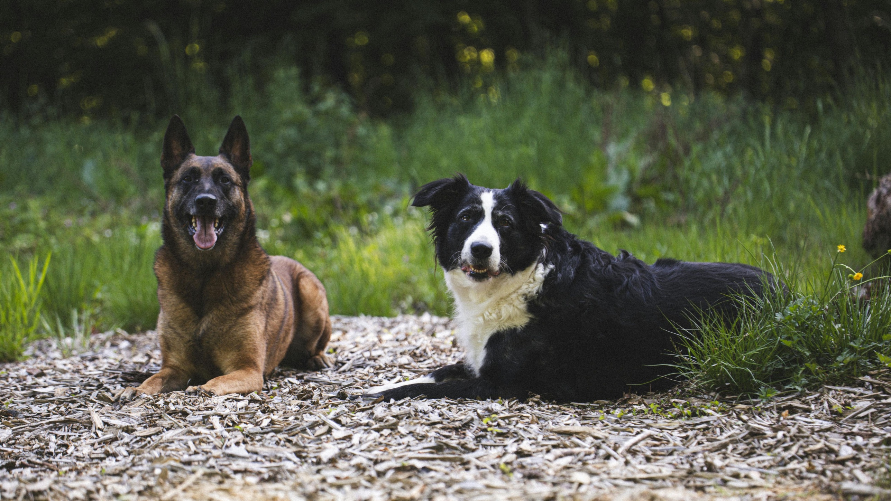

Every new fireworks season starts and you are already worried about how your dog will cope this time. With so many suggestions about the best supplements, whether or not to use medication, and various behavioural changes, it can bring more anxiety to an already difficult situation.
This article is for you. Not a generic overview of fireworks season — but what the science actually says about the supplements being sold to you, including the ones that probably aren't doing what the packaging claims, and my own honest experience testing one of them on my own dog. You deserve honest information. And so does your dog.
Why some dogs struggle so much more than others

Before we get to supplements, this matters. Some dogs are neurologically and genetically predisposed to find noise significantly more threatening than others — and this is not a training failure. Research suggests that 25% to 50% of pet dogs show fear responses to loud noises, with fireworks standing out as the most common and intense trigger. And yet most guardians carry a quiet sense of guilt — as though a well-trained, well-loved dog shouldn't react this way.
Here is what applied ethology tells us about that assumption.
Different dog types carry different neurological and physiological profiles shaped by centuries of selective breeding for specific roles. A herding dog bred to be acutely sensitive to environmental signals. A livestock guardian bred to remain vigilant to threats. A terrier bred to react quickly and intensely to stimuli. These dogs are not anxious because something went wrong in their upbringing. They are responding in ways their biology prepared them for — in a world that looks nothing like the one their ancestors were bred to navigate.
A Border Collie, a German Shepherd, or a rescue dog with an unknown heritage may have a nervous system that is more sensitive to noise than a Labrador or a Basset Hound. Understanding this doesn't make the fireworks season easier overnight. But it does something important: it removes the blame. From the dog. And from you.
This is the starting point for every decision about how to help them.
Why the supplement market is so hard to navigate
When we are worried and watching our dogs suffer, we want to do something. The pet supplement industry — a largely unregulated market, in much the same way that human nutrition supplements are largely unregulated — is built around exactly that impulse.
A nutraceutical is a product derived from natural sources that offers health benefits beyond basic nutritional value. The name sounds reassuring. The packaging often sounds more reassuring still. But "natural" is not a synonym for "effective," and the gap between what a supplement claims and what the evidence supports can be significant.
Thanks to growing scientific interest in companion animals, we do have more useful research than we had a decade ago. But reading it carefully changes the picture considerably.
What the science actually says
L-Theanine: One of the More Frequently Researched Nutritional Options
L-theanine is an amino acid found naturally in green tea that crosses the blood-brain barrier to directly impact neurochemistry. It works by modulating dopamine, serotonin, and GABA — the brain's primary inhibitory neurotransmitter — while simultaneously promoting alpha-wave activity. This unique combination produces a neural signature of being calm but alert, entirely without sedation. While the mechanism is firmly established in humans, it is a highly conserved mammalian pathway that functions similarly in our dogs.
The canine evidence is more limited, and being honest about this serves you better than pretending otherwise.
The most cited dog study enrolled 26 storm-sensitive dogs, of whom only 18 completed it. Anxiety scores and recovery times improved significantly — but there was no placebo group, which makes it impossible to separate the effect of L-theanine from the effect of owner attention, environmental adjustments, or simply time. A subsequent study tested L-theanine commercially in client-owned storm-sensitive dogs and found positive results — but was funded by the manufacturer, which is a limitation worth knowing. A small preliminary study randomly assigned dogs with noise phobia to L-theanine alongside behavioural therapy versus behavioural therapy alone, showing some additional benefit.
The honest summary: the biological rationale is sound, the mechanism operates through pathways shared across mammals, and the studies in dogs show positive signals. But the evidence base is small, mostly unblinded, and partly industry-funded. The most thorough independent analysis of the canine literature concludes that it is not currently possible to say with confidence whether L-theanine has a meaningful clinical benefit for anxious dogs.
What this means practically: it is safe, well-tolerated, and has a plausible mechanism. If you want to try it, the risk is low. Always follow the manufacturer's instructions for your dog's weight.
Combination Nutraceuticals — Tryptophan, Passiflora and Supporting Botanicals
Two more recent studies test combination products rather than single ingredients, and this is where things get more interesting.
A 2021 randomised, double-blind, placebo-controlled UK trial tested a tablet combining L-tryptophan, Passiflora incarnata, Rhodiola rosea, lecithin (a phosphatidylserine source), and B vitamins (B1, B3, B6). Each of these ingredients plays a distinct role: tryptophan provides the raw material for serotonin synthesis; passiflora has established anxiolytic and anticonvulsant properties; rhodiola rosea is an adaptogen suggested to help animals and humans respond and adapt to stress; phosphatidylserine has been shown to normalise the stress response of the hypothalamic-pituitary-adrenal axis; and the B vitamins support neurological function throughout.
After 14 days of supplementation in 52 pet dogs with a history of stress behaviour, dogs receiving the supplement showed a significant 34% reduction in stress scores specifically in response to loud noise, compared to no meaningful change in the placebo group — a statistically significant difference between the two groups for that stressor.
However — and this matters if you are trying to make an informed decision — the overall difference between the supplement and placebo groups across all stressors did not reach statistical significance, and the loud noise subgroup that showed the strongest result included only 8 dogs on the active supplement. The authors themselves acknowledge this as a limitation and call for larger studies.
A 2024 randomised, double-blind, placebo-controlled study tested a different combination — tryptophan, valerian and passiflora — in 44 dogs with confirmed fireworks fear, exposed to real fireworks at 42 and 48 days of daily supplementation. The combination showed meaningful reductions in fear-related behaviours and physiological stress markers. This specific product is not currently available in the UK, and several UK supplements contain the same ingredients at different doses and formulations — the study provides evidence for that particular formulation rather than for all products containing those ingredients.
The honest summary: the most rigorous canine research points toward combination approaches involving tryptophan and supporting botanicals as more promising than single-ingredient products. But the evidence base is still in early stages, study sizes are small, and no single product currently has the kind of robust independent evidence that would allow a strong clinical recommendation. If you are going to try a combination approach, look for products that publish their specific ingredient doses openly rather than hiding behind proprietary blends. If a company won't tell you what is in their product and at what amount, that tells you something worth knowing.
The Products Probably Not Doing What the Packaging Suggests
Rescue Remedy and most off-the-shelf calming treats currently have very little independent clinical evidence of efficacy in dogs beyond placebo. That doesn't mean your dog got nothing from them — placebo effects in animal studies often reflect real changes in owner behaviour (calmer handling, a quieter environment, more attentiveness), and those changes genuinely help. It also doesn't mean they caused harm.
But if you tried one and felt it wasn't working — you were probably right.
Should I actually try this? My honest answer — and what Thor taught me
This is the question I haven't fully answered yet, and it's the most important one.
In my work I always look at the dog as a whole: their breed, their environment, what they've learned throughout their life, their relationships, their health, and their nutrition. All of it matters. I want to give you an example of why, using my own dog Thor.
I tried L-theanine with Thor — not for noise sensitivity, but for travel anxiety, because both of us can get quite anxious in new situations. I started two weeks before a holiday. During those two weeks at home, I noticed no change in his behaviour. But during the holiday itself — different places, different sleeping arrangements, encounters with new people — he managed remarkably well. In situations where I expected him to become nervous, react or become fearful, he showed real resilience. I was genuinely impressed.
So should I conclude he was calmer because of the supplement?
My immediate instinct said yes. My brain, wanting a simple answer and an easy fix, was briefly very excited to share this as an accessible, affordable option for every owner whose dog suffers from anxiety.
But then I came home and used my thinking brain.
When I looked at what had actually changed in Thor's life over the past five to six years, the picture became much more complicated. Our communication is clearer now — I use specific words he recognises to signal what's coming, giving him predictability that lowers his baseline anxiety. Before, when he barked as a Yorkshire Terrier does, I would get frustrated and embarrassed. Now I understand that alert barking is who he is, shaped by centuries of breeding — not a problem to fix. When his barking starts to go overboard, I calmly acknowledge it and move him on from the situation. I've changed too. I'm a calmer person than I was five years ago, and he can sense that. We have a much better relationship. He is also 12 now, with osteoarthritis managed with medication, and his energy levels are naturally lower.
All of this is to say: the L-theanine might have worked. Or it might not have. I genuinely cannot tell you. The evidence for it is weak enough, and the changes in our life significant enough, that any honest answer is: I don't know.
What I can tell you is this. The pet supplement industry is largely unregulated, our brains are wired to want simple solutions when our dogs are suffering, and that cognitive bias — that wish for an easy fix — is exactly what an unregulated market is built to capture.
So before spending money on a supplement with limited evidence, consider your dog's actual level of distress. If your dog is having diarrhoea in the days before Bonfire Night, refusing to eat, panting and pacing — that is a high level of physiological stress, and that money may be better spent on a vet conversation about options with stronger evidence. Medications like dexmedetomidine, trazodone, or gabapentin have real clinical evidence for noise phobia in dogs. Choosing them when your dog genuinely needs them is not a failure. It is being informed, and it is one of the kindest things you can do.
For Thor, his anxiety in that situation was mild — which is why I chose to try a supplement rather than pursue medication. But in a more severe situation, in a different chapter of his life, I have chosen medication. Both decisions came from the same place: looking at the whole dog, not just reaching for the nearest product.
Supplements, if you choose to try them, are one layer of support within a much bigger picture. They are not the picture itself.
What to do now, this week
If fireworks feels close and you are trying to make a decision:
If your dog's distress is mild to moderate — L-theanine at one dose in the morning and one at night, ideally starting from two weeks before the stressful event (follow the manufacturer instructions), or a combination product containing tryptophan, passiflora and supporting botanicals from a manufacturer who publishes their ingredient doses openly, are the most evidence-informed starting points currently available. Use alongside environmental changes, behavioural techniques, toys or food enrichment if your dog will engage with them, background noise, and access to a hiding space.
If your dog's distress is severe — diarrhoea before events, refusing food for days, unable to settle at all — please speak to your vet before fireworks. There are medications with real evidence. You do not have to watch your dog suffer because you haven't found the right supplement yet.
Either way: your calm presence matters more than any product. A regulated nervous system near a dysregulated one exerts a genuine co-regulatory effect. You are not helpless in that room.
If you found this useful, it's the kind of thing worth sharing with someone whose dog struggles this time of year. Most of what circulates about fireworks supplements isn't this honest — and owners deserve better information.
Enjoyed this article?
Subscribe to receive new articles by email. I share thoughtful, evidence-informed guidance to help you understand your dog's nutrition, behaviour and overall health.
Subscribe →Need Personalised Support?
If your dog struggles during fireworks season — whether that's refusing to eat, having digestive upset, or simply not coping no matter how much you do to help — there may be more going on than the right supplement can fix.
I offer online consultations that look at the whole dog: their breed and what that means for how they experience stress, their diet and how it may be supporting or undermining their resilience, and the behavioural and environmental factors that can make a real difference.
If that sounds like what you need, you're welcome to start with a free discovery call — a short, no-pressure conversation where we can talk about your dog and whether working together makes sense.
Book your free discovery call →References
Araujo JA, de Rivera C, Ethier JL, et al. (2010). ANXITANE® tablets reduce fear of human beings in a laboratory model of anxiety-related behavior. Journal of Veterinary Behavior, 5(5), 268–275.
Pike AL, Horwitz DF, Lobprise H. (2015). An open-label prospective study of the use of L-theanine (Anxitane) in storm-sensitive client-owned dogs. Journal of Veterinary Behavior, 10(4), 324–331.
Busse C, Goerlich-Jansson VC, van Zeeland Y. (2021). A randomised, double-blind, placebo-controlled trial assessing the effect of a nutraceutical tablet in the management of stress in pet dogs. Applied Animal Behaviour Science, 236.
Mariti C, Guerrini F, Bracci E, et al. (2024). Is it possible to mitigate fear of fireworks in dogs? A study on the behavioural and physiological effects of a psychoactive supplement. Animals, 14(7), 1025.
Pérez-Guisado J, Muñoz-Serrano A. (2026). Effects of L-theanine on cognition, mood and sleep: evidence from human trials. Frontiers in Nutrition.
Tiira K, Sulkama S, Lohi H. (2016). Prevalence, comorbidity, and behavioral variation in canine anxiety. Journal of Veterinary Behavior, 16, 36–44.
Riemer S. (2019). Not a one-way road — severity, progression and prevention of firework fears in dogs. PLOS ONE, 14(9), e0218150.